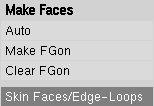

Pour commencer doucement, nous allons modéliser une hélice à trois pales.
On partira d'un cylindre pour obtenir ceci (l'hélice uniquement) :
Cliquez pour agrandirCliquez pour agrandir
Eh bien : à l'attaque ! :pirate:
Lancez Blender, supprimez le cube central en le sélectionnant par un clic droit, et en appuyant sur la touche Suppr.
Nous allons faire un petit peu de maths avant de réellement débuter.
Notre hélice a trois pales : ainsi, notre cylindre de base devra être soudé à nos trois pales. Pour ne pas avoir de problèmes pour la suite, nous allons faire un cylindre qui comporte un nombre de côtés multiple de trois.
Par exemple, on pourra utiliser 18 vertices pour notre cylindre.
Mettez-vous en vue de face avec la touche 1 du pavé numérique avant de créer quoi que ce soit. Pour ajouter un cylindre, on appuie sur Espace, puis on choisit meshpolice> > cylinder, et on change le nombre de vertices pour 18.
Ensuite, mettez-vous dans la vue de côté avec la touche 3 du pavé numérique. Cliquez pour agrandir Réduisez votre cylindre sur l'axe y de façon à obtenir à peu près la même chose que l'image ci-contre. Pour ce faire, appuyez sur S, regardez en bas à gauche dans la vue 3D selon quel axe vous voulez réduire le cylindre, puis appuyez sur la touche correspondante. En l'occurrence, si vous êtes en vue de côté, il s'agira de l'axe y. Déplacez votre souris pour modifier la réduction du cylindre, et cliquez quand cela vous convient.
Ensuite, nous allons affiner le maillage de notre cylindre en appliquant un Loop cut. On appuie sur la touche K, et on clique sur Loop cut. Avec la molette, on modifie le nombre de découpes à trois, comme sur l'image, puis on clique.
=>
Désélectionnez tous les points avec la touche A. Appuyez une fois sur B, et sélectionnez tous les points de la face de gauche du cylindre.
On passe en vue de face avec la touche 1 du pavé numérique, et on effectue un multicut en appuyant sur la touche K. On choisira deux découpages dans le champ Number of cuts. Votre curseur se change alors en un scalpel. Dessinez de la même manière que sur l'image ci-dessous :
Et appuyez sur Entrée pour valider.
Bougez votre vue 3D en gardant enfoncé le clic de la molette. Placez la vue de façon à voir distinctement tous les points qui composent le cylindre. Sélectionnez le centre de la face du cylindre que l'on a précédemment modifiée avec le multicut.
Dans les deux menus entourés de rouge dans l'image ci-dessous, sélectionnez Connected, et Sphere Falloff.
Quelle est l'utilité de ces deux options ?
Ces options concernent uniquement les déplacements, les étirements et les rotations. Habituellement, ces options sont désactivées. Ainsi, lorsqu'on déplace des points sélectionnés, seuls les points sélectionnés bougent. Si on met les options de Proportionnal Edit à On, les points aux alentours dans un rayon défini accompagneront les points sélectionnés. Dans notre cas, on préfère que les seuls points reliés aux points sélectionnés bougent.
Pour ce qui est de l'option Sphere Falloff, elle nous permettra de réaliser une sorte d'arrondi... sphérique. :D
Bref, déplacez notre point sélectionné en cliquant sur l'axe vert, et modifiez en même temps avec la molette la grosseur du cercle qui apparaît à l'écran, de manière à ce qu'il soit légèrement plus petit que notre cylindre.
Nous allons maintenant dessiner la première pale de notre hélice. N'oubliez pas de sauvegarder votre travail. ;)
Désactivez le Proportionnal Edit en mettant l'option à off.
En vue de face (touche 1 du pavé numérique), ajoutez un plan. (espace> Add > Plane).
Découpez-le verticalement en deux avec un Loop Cut (touche K) :
Réduisez-le avec la touche S, déplacez-le avec les widgets (les axes rouge-vert-bleu), sélectionnez les trois points supérieurs avec le clic droit de la souris, et en maintenant la touche Shift enfoncée.
Extrudez ces points quatre fois vers le haut, comme sur l'image ci-contre (touche E, only edges, puis Z).
Remettez l'option de Proportionnal edit à On, sélectionnez les trois points centraux horizontaux de notre pale, et agrandissez-les sur l'axe x (touche S, puis X). Réglez la grosseur du cercle comme sur l'image ci-dessous (le cercle est gris et très peu visible), de façon à obtenir une pale arrondie.
Cela commence à ressembler à une hélice ! :)
Mettez-vous en vue de côté (touche 3 du pavé numérique), sélectionnez la pale avec la sélection rectangulaire (touche B) et extrudez la pale de quelques millimètres (touche E, Region, puis y).
Toujours avec le Proportionnal edit activé, sélectionnez les six points supérieurs de notre pale, et appliquez une rotation d'axe z et d'environ 30° (touche R, puis Z).
Ajustez la grosseur du cercle du Proportionnal Edit comme sur l'image ci-dessous :
Avant de réaliser la pale en trois exemplaires, il faut la raccorder à notre cylindre de base.
Comment faire pour raccorder des points ?
La méthode que je vais vous montrer repose sur la superposition des points que l'on veut souder et invite à demander à Blender de fusionner les points confondus.
La technique la plus facile pour superposer des points préconise l'utilisation de la touche W. Pour indiquer à Blender la destination du point, on sélectionnera le point de destination (clic droit), puis le point à déplacer, on appuie sur W, on clique sur Merge et At first.
Il faudra répéter ces opérations autant de fois que nécessaire pour chaque point à souder.
Donc zoomez sur votre réalisation avec la molette, et à l'attaque ! :pirate:
Les points jaunes sont les points de destination qu'il faut sélectionner en premier. Et les points verts, les points qui doivent être sélectionnés en deuxième. Après, on appuie sur W, on clique sur Merge et At first.
Il faut faire ça pour les six points qui vont toucher le cylindre.
À la fin, vous devez obtenir ceci :
Maintenant nous pouvons produire notre pale en trois exemplaires. :)
Pour ceci, sélectionnez la pale et recentrez votre curseur 3D avec Shift + C, et recentrez votre vue avec la touche C.
Dans le menu Editing (touche F9), modifiez la valeur degr à 360, et steps à 3, car notre hélice aura trois pales réparties sur 360°.
Et on clique sur le bouton Spin Dup avec la vue dans l'axe de notre hélice, c'est-à-dire en vue de face (touche 1 du pavé numérique). On obtient ceci :
Avec la touche A, sélectionnez tous les points et soudez les points confondus (avec la touche W et en cliquant sur Remove Doubles). Normalement, Blender vous annonce qu'il a retiré des vertices.
Notre hélice apparaît comme terminée au niveau de la modélisation. :)
Nous pouvons donc quitter l'Edit mode en appuyant sur la touche tabulation.
Cliquez pour agrandir Pour lisser l'hélice, on applique un modifier subsurf avec un level de 2 ou 3. On clique également sur set smooth afin que les arêtes de notre hélice ne soit pas apparentes. Tout cela est dans le panneau Editing et entouré de rouge dans l'image ci-contre.Cliquez pour agrandir Pour lisser l'hélice, on applique un modifier subsurf avec un level de 2 ou 3. On clique également sur set smooth afin que les arêtes de notre hélice ne soit pas apparentes. Tout cela est dans le panneau Editing et entouré de rouge dans l'image ci-contre.
Dès maintenant, on peut faire un rendu (avec la touche F12) et admirer notre hélice.
Cependant, on se rend compte d'un léger problème, qui apparaît également dans la vue 3D : la soudure que nous avons réalisée n'est pas très propre, il y a des parties noires que l'on voit dans l'image précédente.
Il s'agit d'un problème dû aux faces qui existent sous la matière soudée, mais que le modifier subsurf n'arrive pas à comprendre. On va donc supprimer ces faces (deux par pale).
Tout d'abord, on passe en Edit mode et on change de mode de sélection afin de sélectionner des faces, avec le bouton entouré de rouge sur l'image :
On sélectionne les faces fautives (entouré de rouge sur l'image), on appuie sur la touche Suppr puis on clique sur Faces. Il faut ensuite demander à Blender de recalculer les normales des faces.
Que sont les "normales des faces" ? o_O
Ces normales sont des demi-droites qui partent du centre des faces dans une direction perpendiculaire à la face, et dans un sens. Elles sont censées rappeler à Blender comment distinguer l'extérieur de l'intérieur de l'objet. Ainsi, lors d'un rendu, une face à l'intérieur d'un objet n'est pas de la même couleur qu'une face extérieure.
Cependant, lors de modélisations complexes comme dans notre exemple, Blender ne gère plus très bien l'orientation des faces, d'où l'apparition de traces noires sur notre objet.
Pour y remédier, on peut demander à Blender de faire le point, grâce à la combinaison de touches Ctrl + N.
Notre hélice est tout de suite plus belle :) :
Notre hélice a toujours un défaut : il y a un congé trop important à l'arrière.
Pour réduire ce congé, nous allons utiliser une méthode très utile à l'utilisation du subsurf : deux arêtes très proches réduisent l'arrondi produit par cette technique.
Sélectionnez tous les points de la face arrière de l'hélice (en prenant la sélection rectangulaire, touche B ; en vue de côté, touche 3 du pavé numérique). Effectuez un "Knife midpoints" (touche K) comme pour le multicut précédent. On obtient ceci, que l'on agrandit presque jusqu'au bord avec la touche S :
Et voici le résultat :
Cette partie est finie, votre hélice est presque terminée, car vous allez ajouter un cerceau tout autour dans la prochaine partie, mais en TP !
Vous avez sûrement appris pas mal de choses dans la première partie de ce tutoriel, donc vous allez pouvoir les mettre en application dans un TP, plutôt court.
Le but de ce TP est avant tout de vous faire pratiquer et maîtriser la technique de soudure.
Voici l'énoncé du TP.
Vous réutiliserez l'hélice que vous avez réalisée précédemment. Le travail consiste à réaliser un cerceau autour des trois pales de l'hélice. Ce cerceau devra être soudé à l'hélice, de manière à ne former qu'un seul et unique objet avec elle. Ce genre d'hélice n'existe pas, ou est très peu courante, mais c'est simplement pour mettre en application ce qu'on a vu. ;)
Ainsi, l'image que vous devriez obtenir est celle-ci (à peu près :p ) :
Bien sûr, un petit conseil pour les débutants :
on commencera par ajouter un cercle avec un nombre de côtés multiple de trois. Par exemple, 72 est un chiffre idéal. Ensuite, on extrudera le cercle de diverses façons, afin d'obtenir un tore à section carrée, et légèrement plus grand que notre hélice. On continuera avec les méthodes de soudure que l'on connaît. ;)
...
Vous avez fini ? Voici la méthode qu'il fallait adopter.
Tout d'abord, on ajoute un cercle de 72 vertices.
Ensuite, on centre notre curseur avec Shift + C.
On sélectionne notre cercle.
On extrude (touche E) en agrandissant (touche S).
On sélectionne la surface formée.
On extrude (touche E) en vue de côté sur l'axe y (touche Y).
On soude les pales en répétant les opérations suivantes pour chaque point à souder => on sélectionne le point de destination => on sélectionne le point à déplacer, on appuie sur W, et on clique sur Merge et sur At first.
On sélectionne tout (touche A).
On soude les points confondus (W > Remove Doubles)
On sélectionne les faces à l'intérieur de la soudure.
On les supprime (Suppr > Faces).
On sort de l'Edit Mode (touche Tab).
Et on admire le travail ! :D
Ce TP est fini, votre hélice aussi. Un dernier petit rendu texturé pour lui dire au revoir : ^^
Pour commencer, je dois vous expliquer en quoi consiste la technique des dupliverts.
Les dupliverts se basent sur deux objets : un objet qui servira de support et l'autre qui sera répété sur le support. Ainsi, si j'ai un poisson modélisé en 3D, je peux utiliser des dupliverts pour modéliser toutes les écailles. Je modéliserai alors une seule écaille, je donnerai des instructions à Blender, et... :magicien: J'aurai un poisson plein d'écailles.
Cependant, il y a des contraintes. En effet, Blender place les écailles sur le support aux endroits où on lui a ordonné de le faire, c'est-à-dire à chaque point.
Donc le maillage du poisson doit être irréprochable et d'une densité homogène. Sinon, on aura un poisson tout bizarre. :lol:
Comme nous ne sommes pas des professionnels du modeling, on ne fera pas un poisson plein d'écailles, mais une sorte de bestiole ronde à écailles. Voici sa réalisation : Cliquez pour agrandir
Il est temps de commencer.
Vous l'aurez peut-être deviné, il faut créer une icosphere, qui sera subdivisée quatre fois, et d'un rayon (radius) de 3,5.
Pour ce faire, on appuie sur Espace, Add > Mesh > Icosphere.
L'intérêt de l'icosphere par rapport à l'UVsphere réside dans l'homogénéité de son maillage. Car l'UVsphere est composée de deux zones très denses en points.
Maintenant, créons notre écaille !
Comment fait-on pour créer une écaille ? :euh:
Cela peut paraître complexe, mais c'est très simple. Il y a tellement de façons différentes, mais je ne vais vous en donner qu'une.
Tout d'abord, on change de calque et on crée un plan de 0.3 de côté, sur la vue de face, et à l'origine du repère (recentrez votre curseur 3D avec Shift + C). Pour changer de calque, cliquez sur l'un de ces boutons :
(chaque bouton représente un calque). Ensuite, il faut extruder (touche E) horizontalement les deux points inférieurs du plan, comme sur l'image ci-contre.
Ensuite, on crée des faces comme sur l'image, en utilisant la touche F.
On supprime notre face de base, et c'est fini ! :magicien:
Enfin presque, il ne nous reste plus qu'à appliquer un modifiersubsurf, et un set smooth. Tout cela se trouve dans le menu Editing (touche F9). Je vous remontre la configuration que l'on avait utilisée pour l'hélice :
Cliquez pour agrandirCliquez pour agrandir
Toutefois, une dernière modification s'impose. En effet, nos écailles vont venir se dupliquer sur notre icosphere. Les centres (ici l'origine) de nos écailles vont venir coïncider avec les points qui composent l'icosphere.
Nous devons donc faire rentrer les écailles légèrement dans la sphère afin qu'elles ne paraissent pas trop espacées. Ainsi, déplacez l'écaille dans le mode d'édition de façon à ce que l'origine soit légèrement à l'intérieur.
Désormais, nous allons travailler sur deux calques simultanément, de façon à appliquer un dupliverts de nos écailles sur l'icosphere. Pour ce faire, avec la touche Shift enfoncée, sélectionnez les deux calques sur lesquels se trouvent nos objets. Un problème s'annonce : on ne voit plus notre écaille, qui se retrouve dans la sphère.
C'est pourquoi nous passerons en mode de vue filaire, avec la touche Z.
Afin d'appliquer le dupliverts, on doit lier l'icosphere et l'écaille par un lien de parenté : l'icosphere fera naître les écailles. L'icosphere sera donc parent, et l'écaille enfant.
On sélectionne déjà l'enfant puis le parent, et on appuie sur Ctrl + P > Make parent.
Pour se souvenir dans quel ordre sélectionner l'enfant et le parent, rappelez-vous : "Les femmes et les enfants d'abord !". :p
Maintenant, il faut activer le dupliverts.
Le menu ci-contre s'obtient en appuyant sur la touche F7.
Les boutons du dessus ne sont d'aucune utilité pour les dupliverts.
Les seuls boutons utiles pour nous dans ce menu sont les boutons dupliverts et Rot. Ce dernier apparaît quand on active les dupliverts. Le bouton Rot sert à orienter les objets dupliqués en fonction de l'inclinaison des points de notre maillage.
Ce bouton Rot est donc très intéressant pour réaliser des écailles, car sans lui, toutes les écailles seraient parallèles. :( C'est pourquoi vous devez activer les boutons dupliverts et Rot.
Si vous n'obtenez rien, peut-être avez-vous mal parenté vos objets, ou bien vous ne regardez pas simultanément les deux calques où sont vos objets.
Pour les malchanceux, ce n'est qu'un simple problème d'orientation d'écaille qui peut se résoudre en une ou deux rotations.
Effectivement, les écailles sont mal orientées sur l'axe Z. Sélectionnez votre écaille, éditez-la avec la touche Tab (n'oubliez pas d'alterner entre les vues filaire et texturée avec la touche Z), et faites-la tourner sur l'axe Z (touches R puis Z). Afin d'obtenir une rotation d'un angle exact, maintenez la touche Ctrl enfoncée pendant la rotation. Il est possible que ce soit un autre axe si vous n'avez pas mis au monde votre bestiole avec la même orientation que dans ce tutoriel.
Effectuez des rotations de 90° sur l'axe Z jusqu'à obtenir le résultat attendu.
Il ne reste qu'à ajouter deux yeux, et c'est fini ! :)
La technique dupliframes est très étrange au premier abord, mais elle s'avère très utile pour la modélisation de certaines formes.
Les dupliframes permettent de dupliquer sur une seule image chaque maillage d'un objet dans le temps.
Par exemple, si vous appliquez un dupliframes sur un cube en mouvement, sur chaque image vous aurez toutes les images du cube.
Dans les livres de sciences physiques, on voit souvent un golfeur photographié à de nombreuses reprises successives et très rapidement, et en une seule et unique photo.
Nous pouvons faire de même avec le dupliframes : vous créez un golfeur qui bouge sous Blender, et vous activez le dupliframes.
Quel est le rapport entre un golfeur et la modélisation de spaghettis ?
Grâce au dupliframes, nous pourrons modéliser des cercles que nous ferons bouger dans le temps et les relier sur une même image, de façon à obtenir des spaghettis. :)
Bref, commençons par créer une nouvelle scène. Supprimez le cube présent dans votre scène, et ajoutez un cercle non rempli (touche Suppr pour supprimer le cube, touche Espace pour ajouter un objet, puis Add > Mesh > Circle, et décochez Fill).
Passez en Object Mode avec la touche Tab, et nous allons commencer à faire bouger notre objet sur 50 images.
Je vais imaginer que vous n'avez jamais fait d'animation sur Blender, et je vais donc tout expliquer depuis zéro.
Tout d'abord, nous ne compterons plus en secondes, mais en frames. Une frame, c'est une image en français. En effet, l'unité indivisible en vidéo est la frame : il n'existe pas de demi-frame, contrairement à la milliseconde (et autres subdivisions) pour la seconde.
Une animation est donc composée d'images qui défilent très rapidement. Peut-être que dans votre enfance, vous avez déjà réalisé des flip-books ou folioscopes ? Ces fameux petits livres où l'on dessine une image par page, et dont on feuillette les pages très rapidement, de façon à ce que cela produise une animation. Toute la cinématographie repose sur ce principe, à savoir qu'au cinéma, pour une fluidité minimale, il faut 25 images par seconde.
Eh bien Blender fonctionne d'une manière très intuitive : vous modélisez un objet, vous lui dites qu'il est à un endroit à la première image, et à un autre endroit à la cinquantième image, et Blender calculera les positions intermédiaires sur les quarante-huit autres.
Ainsi, contrairement au folioscope dont on doit créer chaque image, Blender ne nécessite que les positions intermédiaires, ou positions clés (key en anglais).
Comment allons-nous faire notre premier spaghetti ?
Nous allons imaginer qu'un cercle glisse le long de notre spaghetti.
Pour débuter, nous ferons un tout petit spaghetti.
Le principe reste donc très simple.
On se déplace dans le temps avec le bouton entouré de rouge sur l'image :
On déplace l'objet en question (rotation, position, et même agrandissement).
Et on appuie sur la touche I, et on clique sur LocRotScale (Loc pour la position, Rot pour la rotation, et Scale pour l'agrandissement).
Et on recommence, jusqu'à ce que l'animation soit finie. L'ordre des opérations est très important, car dans le désordre, ça ne marche pas. ^^
Bref, mettez-vous en vue de face, et faites trois ou quatre clés d'animation, afin de dessiner un spaghetti (une première clé à la frame 1, une seconde à la frame 17, etc. , jusqu'à la frame 50).
Voici un montage de ce que vous devez faire successivement :
Une fois que vous avez réalisé ceci, retournez à la frame 1, et appuyez sur la combinaison de touche Alt + A. Vous devriez voir votre cercle se déplacer très rapidement, en passant par les positions clés que vous avez déterminées (pour quitter l'animation, appuyez sur Echap).
Sachez qu'une clé peut être écrasée en réenregistrant une clé sur la même frame : donc, si vous n'êtes pas satisfaits de la trajectoire empruntée par votre cercle, n'hésitez pas à la modifier.
Maintenant, il est temps d'utiliser le dupliframes pour créer notre spaghetti réellement.
Appuyez sur F7 pour vous rendre dans le menu Object. Activez le bouton Dupliframes, vous voyez ainsi le contour de notre futur spaghetti.
Je vais vous expliquer ici toutes les options utiles du dupliframes. Tout d'abord, les boutons du dessus (trackx, upx...). Ces boutons s'utilisent dans le cas d'un objet que l'on déplace le long d'une courbe. On aurait pu utiliser cette méthode pour créer notre spaghetti, mais je ne pense pas que ce soit l'exemple le plus intéressant et le plus représentatif qui soit.
Ainsi, la méthode consisterait à parenter notre cercle avec une courbe de Bézier, et le cercle suivrait cette courbe. On aurait de cette manière un beau spaghetti parfait. Et les boutons du dessus servent donc à orienter le cercle par rapport à la courbe. Les boutons commençant par track spécifient l'axe de l'objet (ici un cercle) qui pointe dans la direction de la courbe, et les boutons up spécifient l'axe de l'objet qui pointera vers le haut.
Si vous ne retenez pas le paragraphe précédent, ce n'est pas grave. ;)
Les boutons Dupstart et Dupon permettent à Blender de savoir à quel moment il doit dupliquer l'objet, et quand arrêter de le dupliquer.
Dans notre cas, il faudra mettre ces valeurs à 1 et à 50.
Les boutons Dupon et Dupoff permettent de désactiver certaines duplications. Par exemple, si on veut supprimer deux duplications sur cinq, on mettra Dupoff à deux, et Dupon à trois. Blender laissera actives trois duplications, en sautera deux, et ainsi de suite...
Cela peut être utile pour diminuer le maillage de notre spaghetti.
Les options restantes nous sont inutiles.
Maintenant que nous avons un semblant de spaghetti, nous aimerions bien qu'il ait une surface, et pas seulement un squelette.
Donc, sélectionnez le dernier cercle du spaghetti, et appuyez sur Ctrl + Shift + A (à retenir obligatoirement :p ). Cela nous laisse la possibilité de modifier nos cercles en Edit mode. Mais tant que nos cercles sont tous sélectionnés, joignons-les avec la combinaison de touches Ctrl + J.
Et là, notre spaghetti a bougé : il est vivant ! o_O
Mais non, c'est juste le fait de joindre tous les cercles, qui provoque un changement d'origine, et donc un déplacement de notre spaghetti.
Cela ne nous dérange pas plus que ça, continuons.
Mettons-nous en Edit Mode avec la touche Tab :
Maintenant, nous allons relier tous les cercles ensemble avec la touche F. Cliquez sur Skin faces / edge-loop, comme sur l'image :

Puis cliquez sur segment.
Si nous avions cliqué sur loop, notre spaghetti aurait eu les deux extrémités reliées : ce n'est pas ce que l'on veut dans notre cas.
Voici une superbe image de notre morceau de spaghetti :
C'est plutôt pas mal. :)
Nous allons maintenant nous attaquer à une nouvelle scène : une grosse torsade de spaghettis.
Cliquez pour agrandirCliquez pour agrandir
Ça me met l'eau à la bouche ! :p
J'espère que vous avez bien révisé la partie précédente, car on va se servir des duplivertset des dupliframes.
Tout d'abord, commençons par réfléchir avant d'agir. Vous l'aurez compris, nous avons deux possibilités :
soit on dupliverts des cercles, que l'on convertit un à un en spaghettis avec des dupliframes ;
soit on crée un spaghetti avec des dupliframes que l'on duplique avec un dupliverts.
Alors, lequel est le plus rapide ?
Tic... Tac... Tic... Tac...
Vous avez la solution ?
Si vous avez répondu la deuxième solution, vous avez vu juste. ;)
En effet, il est plus rapide de modéliser un premier spaghetti, que l'on dupliverts. Alors que modéliser des cercles avec un dupliverts, pour ensuite appliquer un dupliframes et toute sa méthode de modélisation sur chaque cercle est un boulot énorme.
Mais qu'est-ce qu'on attend pour commencer ?
Créez une nouvelle scène, et ajoutez un cercle en vue de dessus. Ajoutez un autre cercle, toujours en vue de dessus, que vous réduirez au dixième avec la touche S, et Ctrl enfoncée.
Maintenant, on parente notre petit cercle au grand cercle de façon à avoir notre petit cercle en enfant.
Vous vous rappelez ?
=> Les femmes et les enfants d'abord. Donc on sélectionne l'enfant, puis le parent, et on appuie sur Ctrl + P.
On active le dupliverts en sélectionnant notre parent, et en allant dans le menu Object (touche F7).
Pourquoi commence-t-on par faire un dupliverts, alors qu'on parlait de faire un dupliframes en premier ? o_O
Ce dupliverts permet de dimensionner et de placer au bon endroit notre futur spaghetti, qui une fois dupliframé, servira de base au dupliverts.
Après avoir activé le dupliverts, réduisez le petit cercle avec la touche S, de manière à ce que les cercles soient tangents, comme sur l'image :
Il faut appliquer le dupliverts de façon à ce que chaque cercle soit réel, avec les touches Ctrl + Shift + A. Supprimez tous les cercles, hormis le cercle de base, et un cercle sur celui-ci.
Ne conservez que ces deux cercles-là, ils sont précieux ! :pirate:
Il devrait donc vous rester ces deux cercles (pas forcément au même endroit) :
C'est à partir de maintenant que cela devient intéressant. :)
Sélectionnez le petit cercle, et déplacez son origine au centre du repère. Pour cela, rendez-vous dans le menu Editing (touche F7) et cliquez sur Center Cursor, en vous assurant que votre curseur 3D soit toujours à l'origine du repère.
Cette technique nous permettra de faire tourner notre cercle autour de l'origine du repère.
Désormais, nous allons faire de l'animation.
Allez à la frame 1 si ce n'est pas déjà le cas. Ajoutez une clé à notre petit cercle (touche I, puis LocRotScale).
Maintenant, allez à la frame 30.
En vue de côté ou de face, déplacez votre petit cercle sur l'axe Z de la longueur de notre futur spaghetti.
Revenez en vue de dessus, pour faire une rotation de notre petit cercle de 90°, toujours sur l'axe Z.
Avec Alt + A, vous pouvez vérifier la trajectoire de votre cercle.
Bref, il nous reste à appliquer le dupliframes sur notre petit cercle. Une fois que c'est fait, réglez bien toutes les options, sachant que l'on travaille sur 30 frames uniquement. On a donc ce résultat :
Sélectionnez le dernier cercle (on ne peut pas sélectionner les autres :p ) et faites la combinaison de touches magiques : Ctrl + Shift + A.
Appuyer sur Alt + O pour éviter un changement de repère qui nous embêterait dans notre cas. Enfin, faites Ctrl + J pour joindre tous les cercles. Si ça a bougé, remettez manuellement le spaghetti à sa place.
Passez en Edit mode avec la touche Tab et appuyez sur F pour revêtir votre spaghetti d'une surface. On sélectionne évidement Skin Faces / edge-loop, puis segment.
Et là, bonheur extrême, subtilité de la vie du développeur 3D : notre spaghetti prend enfin une vraie forme. :magicien:
Ne nous arrêtons pas dans notre élan : continuons, et modélisons les autres spaghettis grâce au dupliverts.
Premièrement, il faut commencer par s'occuper de l'origine de nos spaghettis (italienne ou non ? :lol: ). Effectivement, nous avons changé l'origine des spaghettis pour nous simplifier la vie pendant la rotation.
On aimerait bien que notre origine soit à la base du spaghetti, de façon à ce que notre dupliverts fonctionne bien.
Passez en Edit mode sur notre spaghetti (touche Tab), sélectionnez le bas du spaghetti (seulement un cercle), et appuyer sur Shift + S, et cliquez sur Cursor -> Selection.
Maintenant, repassez en Object mode et cliquez sur Center Cursor dans le menu Editing (touche F9), comme sur l'image :
Il nous reste plus qu'à appliquer le dupliverts sur notre spaghetti, pour pouvoir en avoir tout plein.
On sélectionne d'abord le spaghetti puis le cercle de base, on appuie sur Ctrl + P, et on active les dupliverts, et l'option Rot. Pfiou ! Trop dur. :-°
Si vos spaghettis ne forment pas un cylindre, il faut effectuer une rotation du spaghetti originel sur l'axe Z.
Quand tout est parfait, on utilise les touches Ctrl, Shift et A pour que notre chef d'oeuvre devienne éditable.
On supprimera notre spaghetti originel qui a tendance à gâcher la scène, si on le voit.
Il ne nous reste plus qu'une occupation : admirer ! :)
Cliquez pour admirer !Cliquez pour admirer !
Le cours se termine ici. J'espère que cela vous a plu. ;)
N'oubliez pas de mettre un commentaire, afin que je puisse perfectionner mon tutoriel.


{kind=link}
{kind=link}
{kind=link}
{kind=link}
{kind=link}